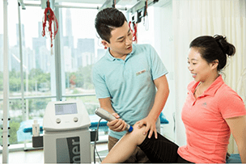

颈椎病、肩膀疼、腰肌劳损、鼠标手，网球时、肌肉拉伤、肌腱炎、腱鞘炎、跟腱断裂 半月板损伤、交叉韧带锻炼等。
立即预约
【前交叉案例】术后7个月，告别损伤，重返运动
2019.10.29
在很多运动中都会发生膝关节强力过伸和内扣是主要两大原因，前交叉轻度的损伤：康复+休息、前交叉重度的撕裂：关节镜手术+康复，下面医家人运动康复中心，通过一个前叉术后康复案例告诉你…
查看详情
【颈椎病案例】你知道吗？颈椎病会导致耳鸣！
2019.10.29
颈椎病是由于椎骨受颈脖周围的水肿压迫而导致的身体其他部位与颈部与头部的供血不足，经常会引起头晕、头疼、颈椎酸疼、骨刺等常见症状。颈椎病导致的耳鸣其机理主要是颈椎椎体发生错位…
查看详情
【脊柱侧弯案例】孩子有点驼背？小心！
2019.10.29
脊柱侧弯有时候并不会真的给我们带来疼痛，但是会影响我们的体态。小朋友12岁，男，2018年检查出脊柱侧弯，T-Cobb角13°。接受纠正训练3个月，从最开始只能坚持几秒钟到现在可以坚持十分钟，直到半个…
查看详情

科普|中国运动员和欧美运动员的身体素质 到底差在哪？
前交叉韧带你所不知道的康复方法！
运动千万条，安全第一条：踝关节骨折该 如何康复？
法国专家告诉你：这样运动才有效
前叉术后康复的四大问题，80%的人做错 你做对了吗？